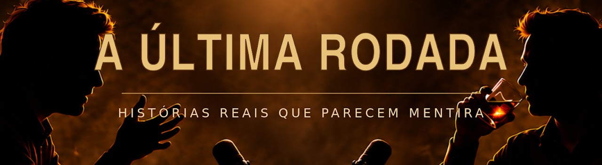
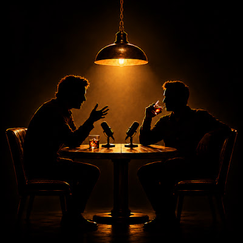

A Última Rodada
@aultimarodadaDuas pessoas, uma mesa de bar e histórias reais que parecem mentira. Acontecimentos históricos, desastres, ciência, tecnologia e decisões humanas contados como uma conversa entre dois amigos depois da meia-noite.
Ver no YouTube